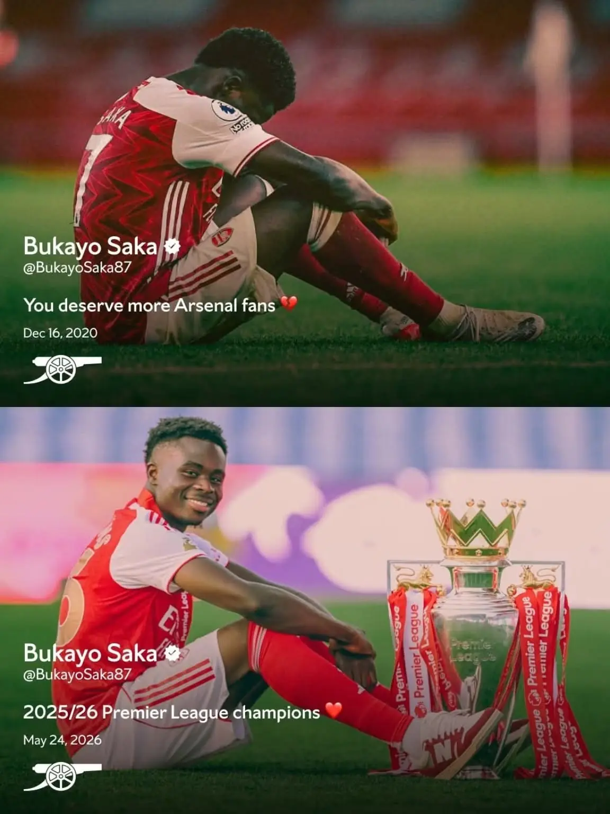
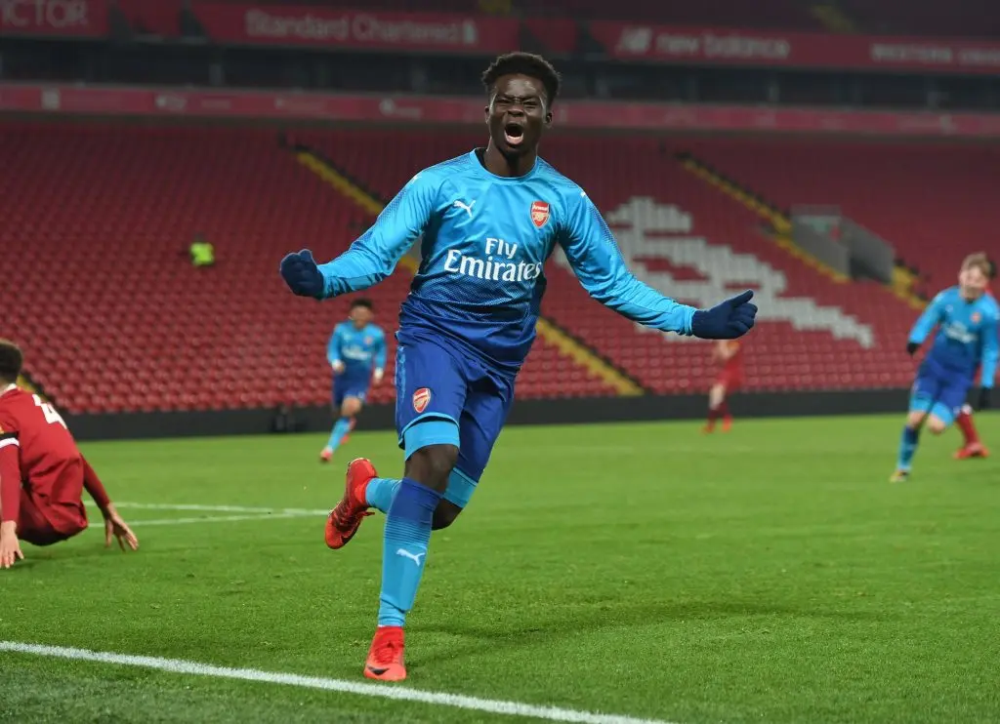
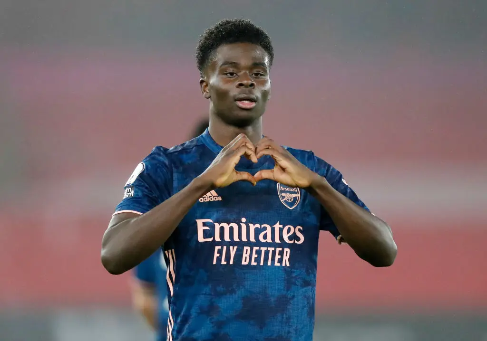

Arsenal · Bukayo Saka
You deserve
more.
Sáu năm trước, đó là lời xin lỗi của một đứa trẻ. Sáu năm sau, Bukayo Saka cùng thế hệ này đã biến nó thành lời hồi đáp.

Dòng tweet đó được viết sau một chuỗi trận tệ hại của Arsenal, trong một giai đoạn mà có lẽ ngay cả những người yêu câu lạc bộ này nhất cũng không biết phải bấu víu vào đâu để tiếp tục tin, khi mỗi cuối tuần trôi qua lại để lại thêm một chút thất vọng, thêm một chút mệt mỏi, thêm một chút cảm giác bất lực vì đội bóng từng được xây bằng vẻ đẹp, niềm kiêu hãnh và những chuẩn mực rất riêng đang dần trở thành một thứ gì đó xa lạ tới mức chính những người yêu nó cũng bắt đầu không còn nhận ra. Đó không chỉ là một dòng tweet buồn sau chín mươi phút thất vọng, cũng không chỉ là một lời xin lỗi của một cầu thủ trẻ sau một màn trình diễn tệ, nó giống như tiếng thở dài của cả một tập thể đang lạc lối, được viết ra bởi một đứa trẻ mới mười chín tuổi, người đáng lẽ chỉ cần được bảo vệ, được lớn lên từ từ, được chơi bóng trong sự tự do và hồn nhiên của tuổi trẻ, nhưng cuối cùng lại phải trở thành một trong rất ít lý do khiến người ta còn muốn bật TV lên để coi Arsenal mỗi cuối tuần.
“You deserve more.” Câu đó đau ở chỗ nó đúng, vì fan Arsenal lúc đó thật sự xứng đáng nhiều hơn. Nhưng điều đau hơn nữa là người nói ra câu đó lại là Saka, một đứa trẻ của Hale End, một người mà mỗi lần chạm bóng vẫn khiến chúng ta thấy chút ánh sáng le lói giữa một căn phòng gần như đã tắt hết đèn.
Ngày đó, Saka không hứa gì cả, em không nói Arsenal rồi sẽ trở lại, không vẽ ra một tương lai lấp lánh, không dùng những lời sáo rỗng để xoa dịu một fanbase đã quá mệt mỏi với hy vọng, em chỉ cúi đầu, nhận phần đau đó về mình, và nói rằng chúng ta xứng đáng nhiều hơn. Nhưng có lẽ chính trong khoảnh khắc đó, dù không ai biết, một lời hứa thầm lặng đã được đặt xuống, giữa một câu lạc bộ đang rơi tự do và những con người vẫn không chịu rời đi.


Sáu năm sau, bức ảnh thứ hai xuất hiện, vẫn là Bukayo Saka, vẫn là dáng ngồi đó, nhưng lần này bên cạnh em không còn là nỗi buồn, không còn là cảm giác tội lỗi của một đứa trẻ phải xin lỗi thay cho cả đội bóng, không còn là màu đỏ thẫm nặng trĩu của thất vọng, mà là chiếc cúp Premier League, là thứ mà biết bao thế hệ Arsenal đã mơ về, đã chạm rất gần rồi đánh mất, đã nhắc tới trong cay đắng, trong hoài nghi, trong những câu “lần sau” nghe càng ngày càng giống một lời tự an ủi hơn là một niềm tin thật sự.
Và có lẽ điều đẹp nhất của khoảnh khắc này không phải chỉ là việc Saka cuối cùng cũng trở thành nhà vô địch, mà là việc em làm được điều đó ở Arsenal, trong màu áo này, trước chính những con người mà em từng nói rằng họ xứng đáng nhiều hơn, những con người đã chứng kiến em lớn lên, đã đặt lên vai em biết bao kỳ vọng, đã có lúc sợ rằng một ngày nào đó chính Arsenal sẽ không còn đủ tốt để giữ lại đôi chân của em.
“Nhiều hơn” đó, sau cùng, không phải là một lời hứa được nói ra cho qua chuyện, nó là từng bước chạy của Saka qua những mùa giải bị đá rát, bị kèm chặt, bị đặt lên vai đủ loại kỳ vọng, là những lần Arsenal ngã xuống rồi đứng dậy, là những đứa trẻ của Emirates lớn lên trong áp lực, là Arteta lặng lẽ xây lại một đội bóng từ đống đổ nát, là những buổi tối chúng ta tự hỏi liệu mình có đang hy vọng quá nhiều hay không, và là cả một hành trình dài để biến một câu xin lỗi thành một lời hồi đáp.
Sáu năm trước, “You deserve more, Arsenal fans” là một lời xin lỗi, là cảm giác bất lực của một đứa trẻ khi nhìn đội bóng mình yêu làm tổn thương những người yêu nó nhất, nhưng sáu năm sau, khi Saka ngồi cạnh chiếc cúp, với nụ cười mà ngày xưa chúng ta từng sợ sẽ bị những thất vọng làm phai đi, câu nói đó cuối cùng cũng có câu trả lời, như thể tất cả những niềm tin, những kỳ vọng, những lần người hâm mộ chọn tin vào em ngay cả khi đội bóng đang chìm trong thất vọng, cuối cùng đã được đặt vào đúng chỗ.
Ừ, chúng ta đã từng xứng đáng nhiều hơn.
Và sau tất cả, chính Bukayo Saka cùng thế hệ này đã biến câu nói năm nào thành hiện thực.